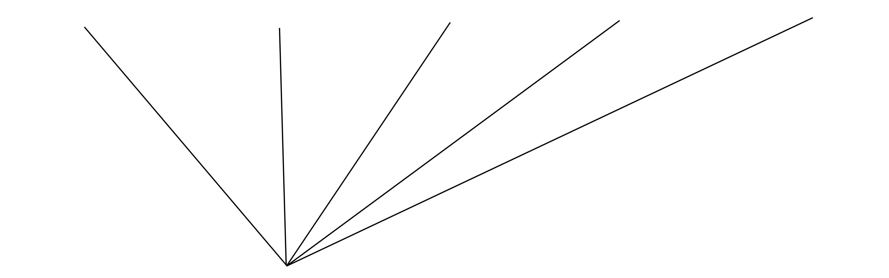

Web Journal


"Réfléchir Ensemble à Demain"
⚠ De Manière Créative, Libre, Open-Source, Collaborative, Gratuite et Ouverte a Tous ⚠
La littérature, les arts visuels, la musique sont autants d’arts qui permettent d’éveiller les sens et de mieux ressentir notre environement. Internet permet de combiner ces différentes formes d’art dans un même format et j’aimerai en associer le plus possible pour créer un contenue qui parle et qui est agréable au lecteur.
J’essaie de faire en sorte qu’il y ai plusieurs niveaux de lecture.
Dans une optique de rendre le lecteur actif vis a vis du contenu …
Ce que j’entend par Libre, c’est que j’écris sur ce qui m’intéresse, sans aucune restriction et il en est de même pour toute les personnes qui souhaiteraient participer ou écrire sur le site. Bien sur je veillerai a ce que tout les échanges soient bienveillants
Construit grace a des technologie Open -Source et disponible également dans ce même format
Jupyter Book et Github
J’aimerai d’ailleurs et c’est un des objectifs de ce site, de promouvoir ces technologies open-source et a quels point elles peuvent apporter une alternative viable aux GAFAM (Google, Apple, Facebook, Amazon, et Microsoft)
Construit grace a des technologie Open -Source et disponible également dans ce même format
Cela limite le champ d’action comme par example:
Une URL longue et difficilement partageable
Une limitation au niveau de la taille des fichier (2Go)
Mais ca préserve une totale indépendance (et c’est pour l’instant le plus important)
Oui tout le monde peut participer
Commenter
Lien vers explication
Vous pouvez commenter en annotant chaque mot
Annoter
Partager Nos Connaissances
Pour la première fois peut-être de l’histoire de l’humanité, les humains commencent à avoir collectivement conscience de vivre une transition évolutive, comme celles qui ont mené de la soupe primordiale d’où naquit la vie jusqu’à l’apparition de Sapiens.
Une chance extraordinaire
Plus nous serons nombreux à nous emparer des questions que pose cette nouvelle transition, plus nous saurons mobiliser notre intelligence collective, celle des humains comme celle des autres êtres vivants et des machines, plus nous aurons de chance d’apporter des réponses satisfaisantes et d’inventer un avenir plus souhaitable que celui que nous annoncent certains prophètes ou que nous construisent certains technologues.
Avant de commencer
- Ce site est accessible sur ordinateur et mobile via un navigateur web, en revanche il est designé pour se lire uniquement sur un écran d’ordinateur.
- Il se construit de manière organique comme un journal et de nouvelles version sont mise en ligne de manière hebdomadaires.
Prenez le temps de lire
En une phrase
Construire ensemble une vision systémique et durable du monde de demain.
🤔
C’est quoi ce truc ?
Il s’agit en premier lieu d’un site internet. Il est le fruit de la découverte d’une nouvelle methode pour contruire des sites web qui s’appelle JupyterBook, que j’utilise pour mon usage personel depuis 1 ans (09/2022)
Et pourquoi je suis là ?
Probablement parce que t’es un pote ou un proche a ce stade de l’avancement du projet. Tu peux finir de lire cette page déja, tu en sauras ainsi plus sur ma démarche et mes projets. Ensuite tu seras libre de voyager ou bon te semble en suivant tes propres interets.
Mais attention !
Le contenue de ce site n’a pas été révisé, corrigé. Il s’agit d’une version brute de notes que j’écris de manière plus ou moins assidue.
Apportez votre contribution
Le but premier de ce siteweb est de créer une conversation et de féderer autour de cette nouvel methode qui se situe en marge des “réseaux sociaux classiques”… J’offre un site aux dix premières personnes qui commenteront cette page ;)
"Un Besoin Vitale"
- Education
J’ai un regard très critique sur l’éducation, les médias et plus généralement sur la façon dont sont partagés les connaissances. En effet, notre système éducatif repose sur des fondements idéologiques du 19ème siècle, les médias sont en grande parties possédés par des milliardaires qui ont bien compris qu’il s’agit d’un outils puissant pour manipuler les masses et enfin, la publication scientifique est gangréné par des intérets financiers qui pousse a la productivité au détriment de la qualité… Un constat bien déprimant dans une époque qui a pourtant un besoin vitale d’idée nouvelles pour faire face aux nombreux défis résultant de l’impacte de l’homme sur la planète. Des idées, personellement je n’en manque pas et celle-ci repose sur un principe fondamentale:
Explorer et comprendre le monde d'aujourd'hui pour imaginer et co-construire le monde de demain en permettant a chacun de créer, implémenter et connecter
Bases de Connaissances 🧠
(Personelle)
Besoin de voire le monde dans toute sa complexité
- Interdisciplinarité
Digérer l'information
Objectifs
"Permettre a Chacun"
De Batir et Partager ses Connaissances
Apprendre
Documenter
Transmettre
De manière fun et créative
Plus d’info
Note
lien vers page david louapre
J’aime apprendre mais surtout j’aime Faire apprendre. Le monde naturelle qui nous entoure, et avec lequel on interragit quotidiennement (souvent sans le savoir), est d’une beauté incommensurable qui n’a d’égale que sa complexité. J’ai eu la chance de rencontrer trés top une enseignante qui m’a donné le gout de la lecture et c’est je pense la seule fois ou le millieux éducatif a eu un impact positif, en me développant un esprit curieux. Le reste de mon cursus peut se résumer a un long et incipide cheminement visant a m’aiguiller vers une case sociale, définit par un travaille, un salaire et donc un statut sociale.
"Pour Co-créer"
Des Bases de Réflexions Collaboratives
En effet, … Explication
Une Planète Apprenante
En effet, … Explication
"Et ainsi Générer"
Une Intelligence Collective
Pour un Monde Plus Durable
Mon Champ d'Action
Qui suis-je?

Mon parcours personel et la génèse du projet
J’ai eu la chance et l’honneur de participer a un projet de recherche dont l’objectif était de mieux comprendre la formation des planètes …
WTF Jackie chan meme
"Mes Intérets"
Là ou je peux contribuer à une société plus durable



Plus d’info
Flux RSS
Note
A insérer!
Version:
 0.1
0.1Status: 💚
Langue:

Version:
0.1Status: 🧡
Langue:
Version:
0.1Status: 💚
Langue:
Version:
0.1Status: 💚
Langue: